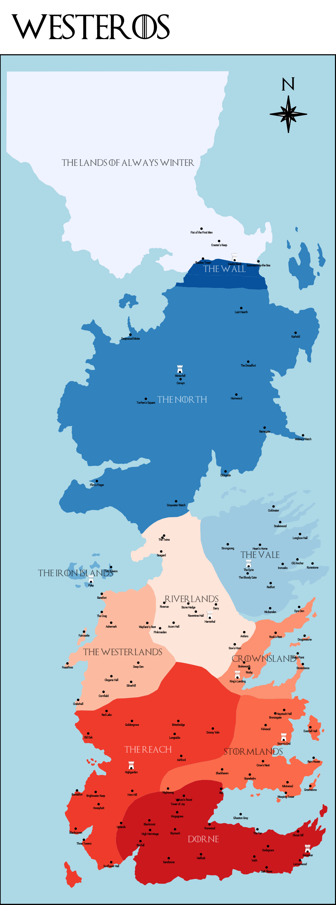

Image Map
Click on one of the Kingdoms of Westeros to learn more.

Points Of Interest
- The Iron Islands
- Beyond the Wall
- The Vale
- The Wall
- Dorne
- Kings Landing (Links to Custom Page - Located in Crownsland)
- Crownsland
- The Reach
- Stormlands
- The Westerlands
- The Riverlands
- The North